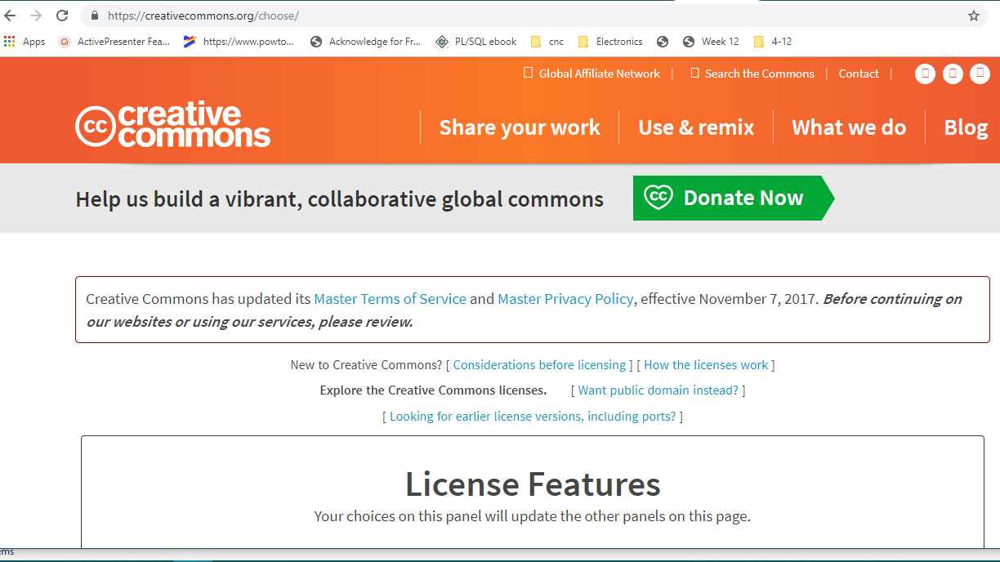
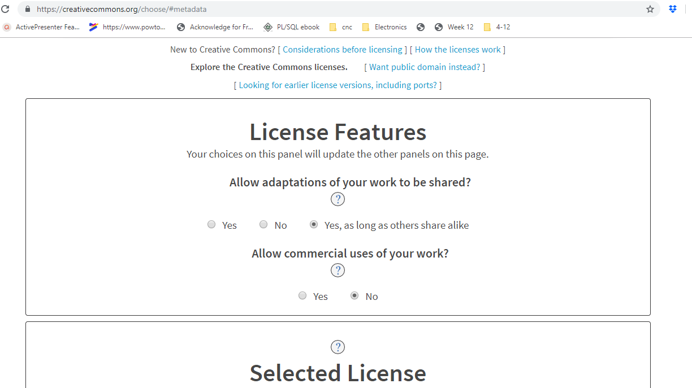
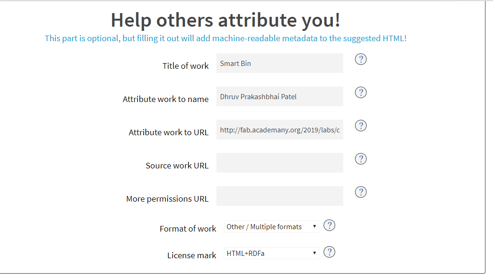
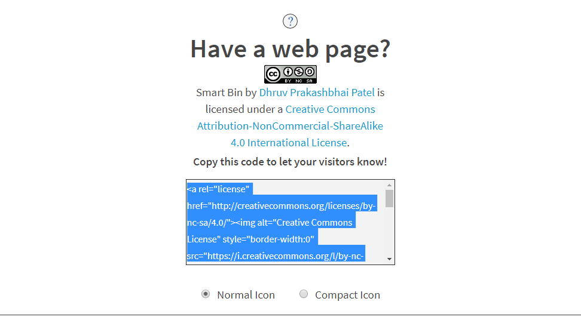

Week 19 : Assignment
- develop a plan for dissemination of your final project
This week’s aim is to learn about protecting your idea and how to avoid people misusing your idea/product for their personal gain. There are many types of patents for the same. The aim was to learn about them and chooses which one is right for us.
Patent
A patent is a form of intellectual property that gives its owner the legal right to exclude others from making, using, selling, and importing an invention for a limited period of years, in exchange for publishing an enabling public disclosure of the invention. In most countries patent rights fall under civil law and the patent holder needs to sue someone infringing the patent in order to enforce his or her rights. In some industries patents are an essential form of competitive advantage; in others they are irrelevant.Wiki
Advantages of Licensing
patent gives you the right to stop others from copying, manufacturing, selling or importing your invention without your permission.
You get protection for a pre-determined period, allowing you to keep competitors at bay.
Alternatively, you can license your patent for others to use it or you can sell it. This can provide an important source of revenue for your business. Indeed, some businesses exist solely to collect the royalties from a patent they have licensed - perhaps in combination with a registered design and trade mark.
Disadvantages
Your patent application means making certain technical information about your invention publicly available. It might be that keeping your invention secret may keep competitors at bay more effectively.
Applying for a patent can be a very time-consuming and lengthy process (typically three to four years) - markets may change or technology may overtake your invention by the time you get a patent.
Cost - it will cost you money whether you are successful or not - the application, searches for existing patents and a patent attorney's fees can all contribute to a reasonable outlay.
You'll need to remember to pay your annual fee or your patent will lapse.
You'll need to be prepared to defend your patent. Taking action against an infringer can be very expensive. On the other hand, a patent can act as a deterrent, making defense unnecessary.
Types of licensing
Creative Commons license : A Creative Commons (CC) license is one of several public copyright licenses that enable the free distribution of an otherwise copyrighted work. A CC license is used when an author wants to give people the right to share, use, and build upon a work that they have created. CC provides an author flexibility (for example, they might choose to allow only non-commercial uses of their own work) and protects the people who use or redistribute an author’s work from concerns of copyright infringement as long as they abide by the conditions that are specified in the license by which the author distributes the work.
MIT License : The MIT License is a permissive free software license originating at the Massachusetts Institute of Technology (MIT). As a permissive license, it puts only very limited restriction on reuse and has, therefore, an excellent license compatibility. The MIT license permits reuse within proprietary software provided that all copies of the licensed software include a copy of the MIT License terms and the copyright notice. The MIT license is also compatible with many copyleft licenses, such as the GNU General Public License (GPL); MIT licensed software can be integrated into GPL software, but not the other way around
GNU General Public License : The GNU General Public License (GNU GPL or GPL) is a widely used free software license, which guarantees end users the freedom to run, study, share and modify the software. The license was originally written by Richard Stallman of the Free Software Foundation (FSF) for the GNU Project, and grants the recipients of a computer program the rights of the Free Software Definition. The GPL is a copyleft license, which means that derivative work can only be distributed under the same license terms. This is in distinction to permissive free software licenses, of which the BSD licenses and the MIT License are widely used examples. GPL was the first copyleft license for general use.
GNU Lesser General Public License : The GNU Lesser General Public License (LGPL) is a free software license published by the Free Software Foundation (FSF). The license allows developers and companies to use and integrate software released under the LGPL into their own (even proprietary) software without being required by the terms of a strong copyleft license to release the source code of their own components. The license only requires software under the LGPL be modifiable by end users via source code availability. For proprietary software, code under the LGPL is usually used in the form of a shared library, so that there is a clear separation between the proprietary and LGPL components. The LGPL is primarily used for software libraries, although it is also used by some stand-alone applications.
BSD licenses : BSD licenses are a family of permissive free software licenses, imposing minimal restrictions on the use and redistribution of covered software. This is in contrast to copyleft licenses, which have reciprocity share-alike requirements. The original BSD license was used for its namesake, the Berkeley Software Distribution (BSD), a Unix-like operating system. The original version has since been revised and its descendants are more properly termed modified BSD licenses. The BSD license is a simple license that merely requires that all code be licensed under the BSD license if redistributed in source code format.
Apache licenses : The Apache License is a permissive free software license written by the Apache Software Foundation (ASF).The Apache License, Version 2.0 requires preservation of the copyright notice and disclaimer. Like other free software licenses, the license allows the user of the software the freedom to use the software for any purpose, to distribute it, to modify it, and to distribute modified versions of the software, under the terms of the license, without concern for royalties. This makes ALv2 a FRAND-RF license. The ASF and its projects release the software they produce under the Apache License and many non-ASF projects are also using the ALv2.
Source :
adhitya-ss
Creative commons
After examining everything, I decided to go with the creative commons licensing since I was working on a product and it gave the better freedom in choosing the type of license.
Types of CC Licenses
Attribution license : OER licensed CC-BY can be modified, used commercially, and may or may not be shared in the same manner, provided credit is given to the author.
Attribution-Non-Commercial license : OER licensed CC-BY-NC can be modified and may or may not be shared in the same manner, but credit must be given to the author and it cannot be used commercially.
Attribution-Non-Commercial-Share Alike license : OER licensed CC-BY-NC-SA can be modified, but credit must be given to the author. Additionally, it may not be used commercially and must be shared in the same manner.
Attribution-Non-Commercial-No Derivatives : Materials licensed CC-BY-NC-ND cannot be modified or used commercially. It may or may not be shared in the same manner and credit must be given to the author. Materials that possess a No Derivatives license are not considered to be OER.
Attribution-No Derivatives license : Materials licensed CC-BY-ND may or may not be shared in the same manner, can be used commercially, but credit must be given to the author and it cannot be modified. Materials that possess a No Derivatives license are not considered to be OER.
Attribution-Share Alike license : OER licensed CC-BY-SA may be modified and used commercially, provided credit is given to the author and it is shared in the same manner. This license is somewhat similar to the GNU Free Documentation License.
source :
Types of CC
license
Creative commons website
click here to redirect on creative commons website.

License Features
Allow adaptations of your work to be shared? - Yes, as long as others share alike
Allow commercial uses of your work? - No

Product and personal features
Next is entering the title for your product, your personal info, website address for the product you’re licensing and reference (if any) from where your product is inspired.

Web page link
Once everything is entered, the screen will show the html code for your license which you can copy at the end of your webpage.
This should display the licensing information at the bottom of the page like shown below.

dissemination
What is Dissemination ?
Dissemination means sharing research results with potential users - peers in the research field, industry, other commercial players and policymakers). By sharing your research results with the rest of the scientific community, you are contributing to the progress of science in general.
In Future : Research and Improvement
in Future Scope i wanted to make these system more robust and user Friendly though electronics and interface programming, As i am finding my project good for both marketing purpose and Home use i will like to separate two systems. i would like to improve its code and make it more secure. in further i wanted to make more user friendly by making its own app. I think these system can benefit both Shopkeepers and Government.